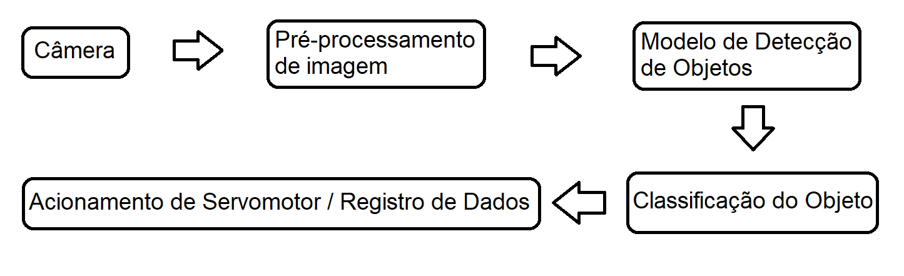
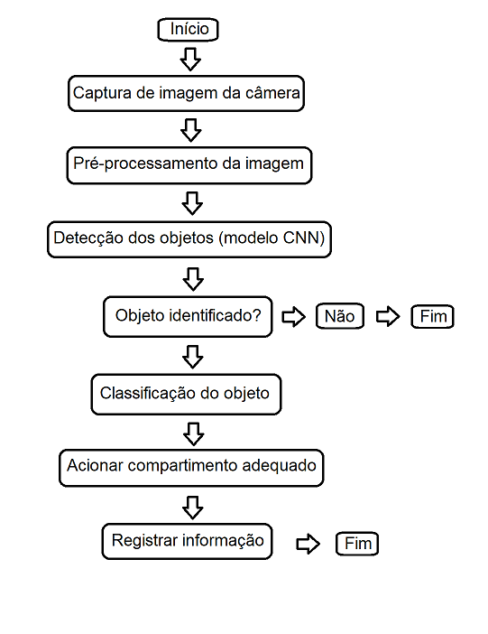

Introdução
A gestão incorreta de resíduos hospitalares representa um grave risco à saúde pública e ao meio ambiente. Materiais como seringas, luvas contaminadas, frascos de medicamentos e resíduos biológicos devem ser descartados de acordo com regras rígidas da ANVISA (RDC nº 222/2018), mas muitas vezes essa separação depende da ação manual de funcionários que, sob pressão e carga horária elevada, podem cometer erros. O problema, portanto, é a ausência de um sistema automatizado e contínuo que identifique, classifique e destine corretamente os resíduos hospitalares no ponto de descarte, evitando contaminações cruzadas, acidentes com material perfurocortante e impactos ambientais.
A partir da entrevista realizada pelo integrante Caio Vilor Brandão, foi identificada a possibilidade da aplicação do projeto proposto.
Nos hospitais, clínicas e laboratórios, há uma variedade de tipos de lixo — de baixo risco (ex.: luvas não contaminadas) a altamente perigosos (ex.: agulhas com resíduos biológicos). A separação incorreta pode gerar multas, riscos ocupacionais, e ineficiência no tratamento dos resíduos. Pesquisas demonstram que mais de 25% dos acidentes com material biológico em ambientes hospitalares envolvem falhas no descarte (Fonte: Silva et al., 2020, Revista Brasileira de Enfermagem). Além disso, tecnologias com visão computacional já vêm sendo aplicadas para classificação de lixo doméstico com bons resultados (Zhang et al., 2021, Waste Management Journal), o que valida o uso de câmeras e inteligência artificial para categorização visual.
Com isso em mente, foi pensado um sistema que realizasse a classificação automática desses lixos, a fim de proporcionar o descarte correto.
Objetivos iniciais:
- Aplicar os conceitos da disciplina (filtragem, transformações geométricas, calibração e intrínsecos/extrínsecos);
- Desenvolver um sistema automatizado em Python com OpenCV que:
- Detecte objetos (resíduos hospitalares) através de uma câmera;
- Classifique o objeto identificado quanto ao tipo (ex.: luvas, seringas, frascos) e ao grau de risco (baixo, moderado, alto);
- Ative um servomotor que direciona fisicamente o item descartado para a compartimentalização correta (baixa, média ou alta periculosidade).
Qual o benefício do sistema ao usuário?
- Segurança: Reduz o contato humano com materiais contaminantes.
- Eficiência: Automatiza a triagem sem depender de treinamento humano.
- Conformidade legal: Facilita o cumprimento das exigências legais de descarte.
- Custo-benefício: Utiliza componentes acessíveis (Raspberry Pi, servos, webcam USB, etc.).
- Escalabilidade: Pode ser implementado em pequenas clínicas ou grandes hospitais.
Materiais e métodos
O projeto consiste em programas (códigos) em python que utilizam bibliotecas, como o OpenCV, para processamento e tratamento de imagem e vídeo.
Inicialmente, foi pensado também na utilização de um servomotor para realizar a categorização do lixo e de uma esteira para transportá-lo. Porém, devido ao tempo disponibilizado para confecão, a parte física do projeto foi reduzido ao uso de uma câmera e uma caixa com um fundo preto onde os objetos seriam posicionados para análise.
Ou seja, o projeto final consiste nos programas, na caixa para posicionamento dos objetos e de uma câmera para obtenção das imagens em tempo real. Os objetos são posicionados no fundo da caixa e são analisados pelo programa final através da câmera, onde, no monitor, é exibida uma janela com o objeto, sua classificação e o grau de precisão da análise. Além do programa principal, há outros programas, como o auto_calibrate, record_class, etc. Todos eles estão especificados abaixo. Para fins de simplificação da apresentação, foram usados apenas quatro tipos de objetos para a demonstração da detecção.
Técnicas e Ferramentas Utilizadas para o Código
- OpenCV – Captura de vídeo da webcam, manipulação de imagens, detecção de contornos, desenho de caixas e texto na tela.
- Python 3 – Linguagem principal utilizada.
- PyTorch – Criação, modificação e execução da rede neural (ResNet18).
- Albumentations – Redimensionamento, normalização e conversão de imagens para tensor PyTorch antes da classificação.
- NumPy – Operações numéricas e manipulação de arrays.
- Pickle – Carregamento e salvamento de objetos Python.
Lista dos Programas:
- train_new.py
- record_class.py
- prepare_dataset_new.py
- inference_new.py
- auto_calibrate.py
Funcionamento
- Inicialmente, é utilizado o código "auto_calibrate.py" para realizar a calibração da câmera com base , gerando o arquivo final calib.npz;
- Em seguida, é utilizado o código "record_class" para tirar fotos dos objetos desejados;
- O código "prepare_dataset" é então utilizado para separar e tratar as imagens, diminuindo seus tamanhos e deixando-as mais leves;
- O código "train" realiza o treinamento com base nas imagens processadas, gerando arquivos com os dados necessários (pasta models);
- Por fim, o algoritmo "inference" realiza a classificação em tempo real dos objetos com base nos dados gerados pelo código anterior, exibindo na tela o grau de precisão da medição e a classificação do objeto.
Tipos de Lixo e Classes no Sistema
- Normal: Lixo não identificado (celular e anel).
- Low: Nível baixo de perigo (gazes e luvas).
- Medium: Nível mediano de perigo (seringas).
- High: Alto nível de perigo (agulhas).
Diagrama de Blocos

Fluxograma Simplificado do Sistema

Lista dos componentes gerais:
- Fotos para treinamento (pasta data->raw);
- Câmera;
- Computador com Ubuntu;
- Bibliotecas de códigos (litadas em cada arquivo de programa);
- Caixa (cenário de análise).

Grau de atendimento do sistema desenvolvido em relação ao contexto/cenário escolhido:
Como mencionado, para fins de simplificação e por questão de tempo, a parte do acionamento do servomotor e da esteira não foram elaborados, ficando em foco a parte principal da análise pelo programa.
Conforme o vídeo abaixo, o programa conseguiu detectar de modo satisfatório todos os objetos propostos, embora apresente um pouco de dificuldade a depender de fatores como iluminação, posição do objeto e modo como ele é disposto.
Entretanto, mesmo com as dificuldades, o teste pelos usuários se mostrou satisfatório, conforme seção a seguir.
Laboratorio Experimental
Os usuários foram apresentados ao projeto conforme seção LEx, com preenchimento de um formulário ao final do teste.
O Procedimento experimental foi:
- 1) Escolha um objeto;
- 2) Posicione ele de frente para a webcam, de modo que o objeto esteja visível na janela do programa;
- 3) Verifique a categoria apresentada na janela;
- 4) Teste com outros objetos, inclusive objetos pessoais.
Os resultados do formulário foram extraídos para uma planilha com as notas de cada usuário e os comentários e sugestões estão informados na seção abaixo.
A planilha com as notas pode ser baixada aqui.
A partir das notas, que se encontraram entre 8.0 e 10.0, é possível notar que o programa atendeu satisfatóriamente o que foi proposto, embora melhorias sempre são consideradas. Entre as sugestões dos usuários, encontra-se "incluir uma caixa para limitar a luminosidade", dado que a estrutura do projeto não estava concluída até o momento, a caixa foi adicionada posteriormente.
Conclusões
O projeto apresentado demonstrou a viabilidade da aplicação de técnicas de visão computacional e inteligência artificial na identificação e classificação de resíduos hospitalares, mesmo em um ambiente controlado e com limitações físicas. Através do uso de bibliotecas como OpenCV e PyTorch, foi possível desenvolver um sistema funcional capaz de realizar, com bom grau de precisão, a detecção e categorização de diferentes tipos de materiais descartados, conforme o nível de periculosidade.
Apesar da ausência de componentes físicos como servomotores e esteiras, a fase de prototipagem focou com sucesso na etapa mais crítica do sistema: a análise visual em tempo real. Os testes práticos com usuários reais reforçaram a utilidade da solução, apontando seu potencial para aumentar a segurança, reduzir falhas humanas e automatizar um processo ainda muito dependente de ação manual.
As avaliações recebidas indicaram alto grau de satisfação com o desempenho atual do sistema, além de fornecerem sugestões valiosas para evoluções futuras, como o controle de iluminação e expansão do banco de dados de objetos. O projeto, portanto, cumpriu os objetivos propostos e abre caminho para futuras integrações e melhorias, especialmente no que diz respeito à automação completa do descarte e à adaptação em ambientes hospitalares reais.
Referências Bibliográficas
[1] Agência Nacional de Vigilância Sanitária (ANVISA). https://www.gov.br/anvisa/pt-br/assuntos/medicamentos/registro-sanitario/legislacao/residuos-de-servicos-de-saude
[2] Ministério do Meio Ambiente (Brasil) – Gestão de resíduos sólidos. https://www.gov.br/mma/pt-br/assuntos/gestao-e-educacao-ambiental/gestao-integrada-de-residuos-solidos
[3] World Health Organization (WHO) – Management of waste from healthcare activities. https://www.who.int/publications/i/item/9789241548564
[4] Waste Management Journal (Springer) – Artigos sobre classificação de lixo usando visão computacional e IA. https://www.journals.elsevier.com/waste-management
[5] OpenCV (Documentação oficial) – Biblioteca para processamento de imagens e vídeo. https://docs.opencv.org/
[6] PyTorch (Documentação oficial) – Framework de aprendizado de máquina e redes neurais. https://pytorch.org/docs/stable/index.html
[7] Albumentations (GitHub) – Biblioteca para aumento de dados em visão computacional. https://github.com/albumentations-team/albumentations
[8] Materiais disponibilizados pelo docente da disciplina.